Raymond Shi
The midterm project began with the idea of a nearly full implementation of a sidescroller game. However, most of the desired implementations were not implemented. Features such as character selection, boss fight, various equipment, and marketplace were not implemented. Though, with numerous resources online such as image and audio files, several features have been implemented to create a somewhat realistic side scroller experience.
My initial task was to find the tiles and images for the game. My first option was to use a spritesheet for the images. However, I soon settled with the tileset from
click here.
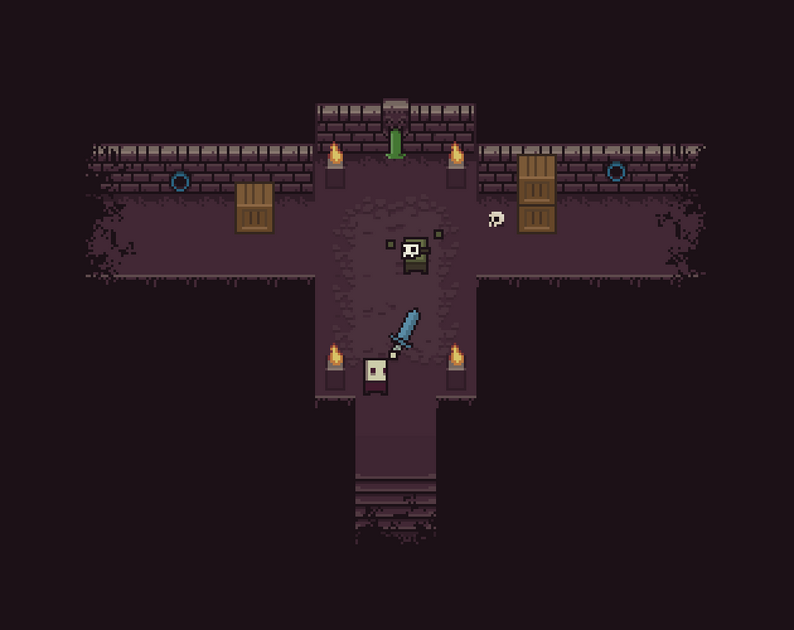
The tiles in the tileset were made for a dungeon style overhead game. Thus, to translate the tiles into a platform side scroller, I added a background image along with a character affected by gravity. Then, to add the tiles into the game and draw them, I renamed the files (so that the 33 images would be easier to iterate through).
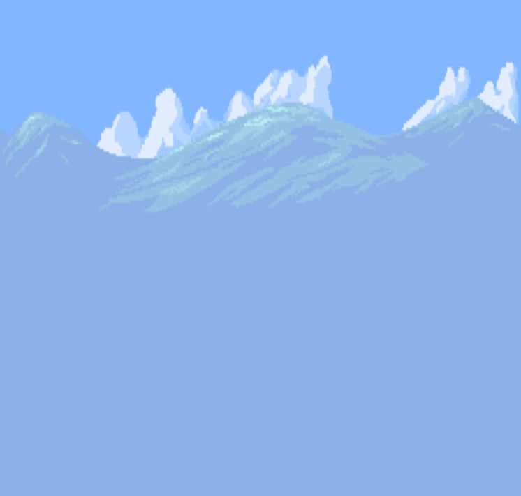
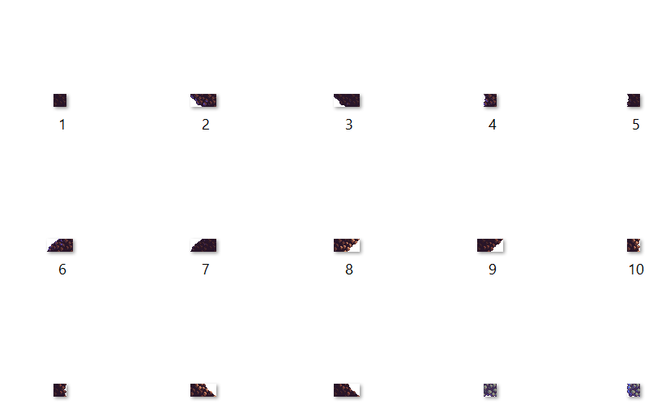
For the enemy animations, I implemented play.js animation code. For the enemies that could move, I reflected their images so that the movement direction would look realistic. Once the images needed for the objects were added, I implemented the player to object interaction. The game would have three states: main menu, gameplay and end screen. In total, three maps are implemented, and two different end screens are available (based on whether the player wins or loses).
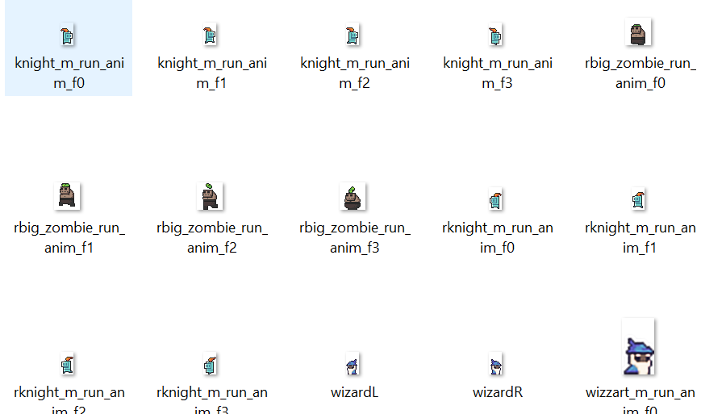
Example of image files reversed
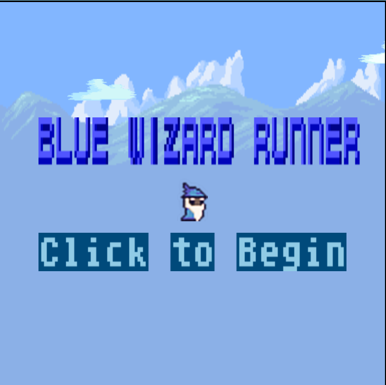
MAIN MENU
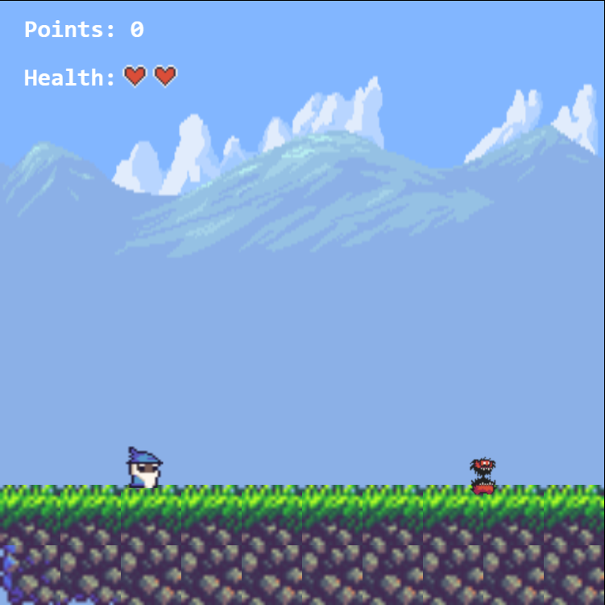
GAMEPLAY
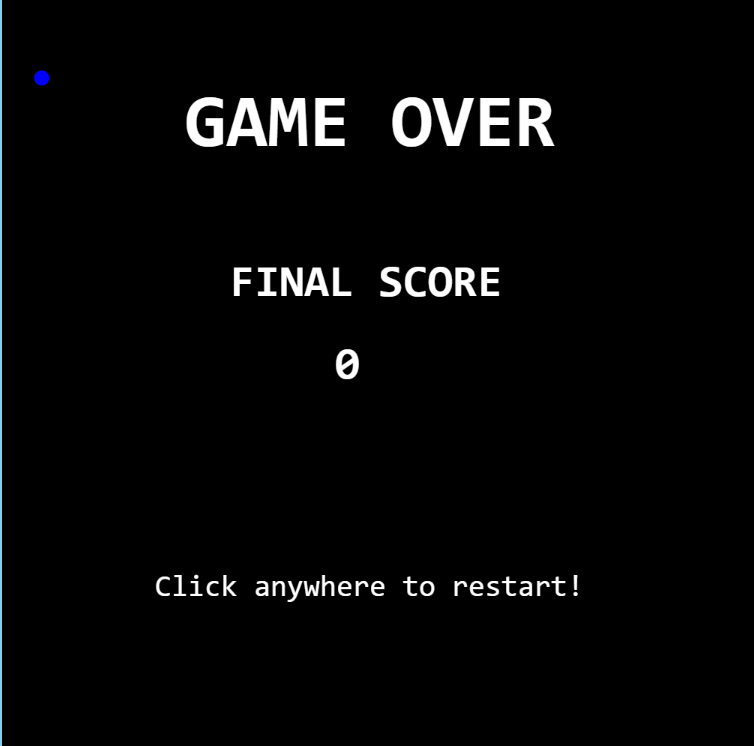
LOSE SCREEN
The user controls a player who is in the center of the canvas. The first enemy implemented is stationary. If the player comes into contact with this monster, then the monster dies and the player loses one health. The second enemy, unlike the first, moves according to predetermined variables given to it. The third enemy, similar to the second, moves at a much faster speed.
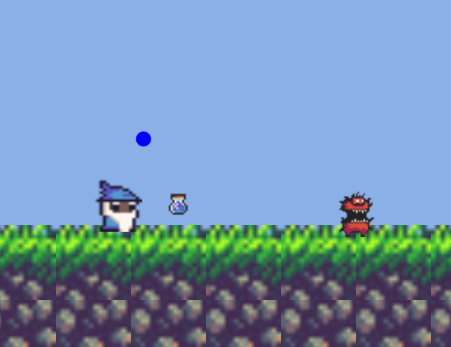
Throwing flask at stationary enemy.
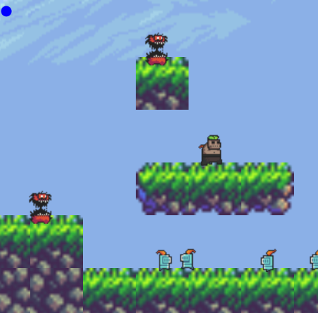
Map with second and third enemy.
The player also attacks using a flask as a weapon. This flask has unlimited uses and disappears once it reaches past the canvas width. If the flask comes into contact with any enemy, then the enemy will die and the player gains two points. Initially, I attempted to use the sprite feature in play.js to animate the flask, however, the position properties were saved as vectors and collision would only work with other sprites. Therefore, I decided to make the flask into another object that would interact with the enemies.
The door is the objective for every map. If the player reaches the door, then he proceeds to the next map and gains five points. The individual objects are linked by the main index.html file to the sketch.js file. In the sketch.js file, the tiles are placed onto the grid along with the necessary parameters for the objects. Multiple files are added to the preloader. World, player, and enemy objects are initialized in this preloader as well. The enemy objects are also pushed into an array for easier access and maintenance.
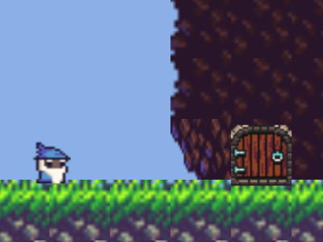
Door
For the gameplay, the player controls a blue wizard, hence the name of the game. The blue wizard has two lives and is able to throw a flask as a weapon to defeat enemies. Every time the user attacks, an attack object (or object from the Magic class) is added to the array. If an attack comes into contact with an enemy, then both the enemy and attack is sliced from the array.
One major bug of the initial implementation was slicing the entire array after a position rather than only one item from the array (slice(index) instead of slice(index,1)). Due to this bug, an attack would defeat all enemies after the target.
The gameplay ends when either the player loses both health points or if the player reaches the third door. If the player loses, then the player is sent to the losing screen. On the other hand, if the player wins, then the player is sent to the final score screen. After the player clicks “play again,” the game resets all variables and references. Once all the gameplay elements were implemented, I gave certain inputs their own sound. A background audio file was also set on loop.
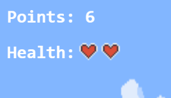
Health and point score
CLICK HERE FOR PROJECT